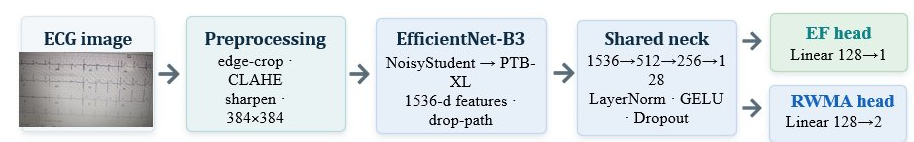
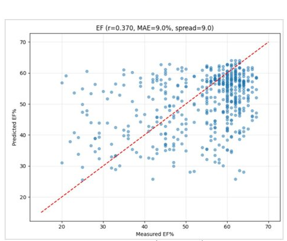
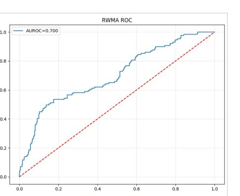
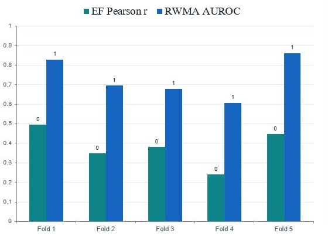
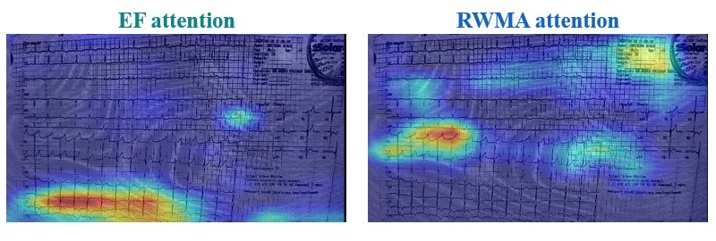

Screening for left ventricular dysfunction from photographed 12-lead ECGs
A deep-learning feasibility study
Abstract
Echocardiography is the reference standard for assessing left-ventricular function, but it requires an ultrasound machine and a trained operator — both scarce outside large hospitals. A 12-lead electrocardiogram and a phone, by contrast, are almost everywhere. We tested whether a single photograph of a printed 12-lead ECG carries enough recoverable signal to screen for two echocardiographic findings: left-ventricular ejection fraction (EF), modelled as regression, and regional wall-motion abnormality (RWMA), modelled as a binary screen. A multi-task EfficientNet-B3 ensemble was trained on 500 paired ECG–echo records using three-stage transfer learning, inverse-density loss weighting, and 5-fold stratified cross-validation with out-of-fold evaluation. On held-out folds the model reached a Pearson r of 0.37 and a mean absolute error of 9.0 EF points, with an AUROC of 0.76 for detecting severely reduced EF and 0.70 for the RWMA screen; the strongest folds reached 0.83–0.86. Gradient-based attention maps confirmed the trained model reads ECG waveforms rather than paper artefacts. We frame the system as a screening and triage aid, not a diagnostic replacement, and report the honest, data-limited ceiling of a single-centre cohort.
Background & objective
Over two billion people lack reliable access to echocardiography, the primary tool for measuring how the heart pumps. An echocardiogram directly measures pumping strength and wall movement; an ECG only hints at them. Yet the ECG costs a fraction of an echo, needs no sonographer, and is already installed in clinics where ultrasound is not.
The seminal demonstration that a neural network can infer reduced ejection fraction from the raw 12-lead ECG established that the ECG encodes recoverable information about ventricular function.1 That work used digital signal data from a large multi-centre archive. The harder, more deployable question — and the one a rural clinic actually faces — is whether that inference survives when the only input is a photograph of a paper ECG, captured on a phone, with the glare, skew and printout clutter that entails.
Objective. From a single ECG image, predict two echocardiography findings: ejection fraction (a continuous percentage, regression) and the presence of a clinically significant regional wall-motion abnormality (a binary screen). The intended use is triage — flagging which patients need the scarce echo slot first — not diagnosis.
Dataset
Cohort. 500 patients seen at a single tertiary cardiology centre between April 2025 and April 2026, each contributing one photographed 12-lead ECG paired with echocardiography-derived labels. EF ranged from 20–67% (mean 54, SD 10.9). The cohort is dominated by near-normal cases, the imbalance that drives most later design choices.
Label extraction. The supervised targets live inside free-text echo reports (“LVEF 35%, hypokinetic infero-lateral wall…”). Plain OCR returns characters but not structured fields, so a vision-language model (Qwen2-VL2) read each report image and emitted EF as a number, RWMA as present/absent, and PAH severity, normalising the synonyms and varied layouts on which brittle regex rules break. Where a report gave an EF range, the midpoint was taken. The extracted table was treated as a draft and spot-corrected; residual label noise is one reason the performance ceiling is data-limited rather than model-limited.
| Target | Stratum | n |
|---|---|---|
| EF severity | Normal (≥50%) | 357 |
| Mildly reduced (40–49%) | 81 | |
| Moderately reduced (30–39%) | 54 | |
| Severely reduced (<30%) | 8 | |
| RWMA screen | Non-significant (none + mild) | 371 |
| Significant (moderate + severe → refer) | 129 |
EF cut-offs follow standard clinical thresholds. RWMA was binarised for a screening decision.
Methods
Image preprocessing
Each photograph passes through a fixed pipeline before the network sees it, intended to strip distracting artefacts, standardise lighting, and match the exact input format the backbone was pretrained on.
| Step | Setting | Rationale |
|---|---|---|
| Edge crop | 5% each side | Removes the most artefact-heavy borders — patient name, hospital logo, grid edges — the cues a model can cheat on. |
| Grayscale | BGR → gray | An ECG trace is ink on paper; colour carries no diagnostic signal and varies with camera and paper. |
| CLAHE | clip 2.5, 8×8 tiles | Contrast-limited adaptive histogram equalisation localises enhancement to roughly the grid-square scale; faint traces become legible without blowing up noise. |
| Sharpen | 3×3 kernel | The diagnostic information is in thin lines; sharpening crisps the QRS spikes and ST segments. |
| Resize | 384 × 384 | The native training resolution of this EfficientNet-B3 checkpoint; matching it preserves the pretrained weights and resolves thin lines. |
| Normalize | ImageNet mean/std | Places pixels in the numeric range the pretrained backbone already understands. |
Identical preprocessing runs at training and inference; the deployed bot calls the same function.
Augmentation. Each training image is randomly perturbed every epoch — small rotation, shift and scale (a tilted, off-centre phone), brightness and contrast jitter (room lighting and photocopier variation), mild blur and noise (cheap sensors), and coarse dropout (masking patches so no single region is depended on). Horizontal and vertical flips are deliberately excluded: lead order and waveform polarity carry meaning, so flipping would teach a false invariance.
Architecture
One shared image encoder produces a feature vector; a small shared neck distils it; two task-specific heads read EF and RWMA off that shared representation. This multi-task design lets the related tasks support each other, regularises a model trained on few images, and answers both questions in one forward pass.

EfficientNet-B34 sits at the small-data, cheap-deployment sweet spot of its family: B0 underfits the fine waveform detail, B7 would overfit 500 images and be slow on a free CPU host. At ~12.7M parameters it runs on a CPU. The full set of architectural choices appears in Table 3.
| Hyperparameter | Value | Reason |
|---|---|---|
| Backbone weights | ns_jft_in1k | NoisyStudent checkpoint trained on JFT-300M then ImageNet-1k — the strongest public B3 starting point. |
| Input resolution | 384 | Native size of the checkpoint; enough pixels for thin ECG lines. |
| Backbone features | 1536 | Width of the pooled B3 feature vector; the neck’s input. |
| Global pool | average | Fixed-length vector and a mild regulariser versus flattening. |
| drop_rate | 0.20 | Dropout on backbone features; moderate regularisation for 12.7M params on 500 images. |
| drop_path | 0.10 | Stochastic depth; randomly skips whole blocks — an ensemble-of-shallower-nets effect. |
| Neck widths | 1536→512→256→128 | Progressive compression into a compact shared representation. |
| Normalisation | LayerNorm | Batch-independent, so stable with the small batches we are forced to use. |
| Activation | GELU | Smooth gradients; avoids ReLU’s dead-neuron region. |
| Neck dropout | 0.45 / 0.315 / 0.225 | Heavy early, lighter near the bottleneck where every feature is precious; aggressive regularisation justified by the tiny dataset. |
| EF head | 128 → 1 | Single linear output; EF is continuous. |
| RWMA head | 128 → 2 | Two logits → softmax probability; RWMA is present/absent. |
| Total parameters | ~12.7 M | Small and CPU-friendly; the regularisation above keeps it from memorising 500 images. |
Loss functions
EF. Smooth-L1 (Huber) loss — quadratic for small errors, linear for large ones — is robust to the outliers and label noise inherited from VLM extraction. Crucially, it is paired with inverse-density (label-distribution-smoothing) weighting7 that up-weights rare EF values, capped at 3×. Without it, a model minimising average error simply predicts ~54 for everyone and ignores the rare, clinically vital low-EF cases. The cap was tuned: 6× over-corrected into noisy predictions, 3× balanced catching low EF against overall accuracy.
RWMA. Class-weighted cross-entropy up-weights the abnormal class, because in screening a missed sick patient is worse than a false alarm. EF targets are scaled by 1/100 during training for numerical stability and rescaled at inference.
Three-stage transfer learning
With 500 labelled images you cannot teach a network how to see from scratch, so knowledge is inherited in three stages, each closer to the task. Stage 1: NoisyStudent pretraining5 on JFT-300M and ImageNet supplies general vision. Stage 2: re-pretraining on PTB-XL, 21,430 public 12-lead ECGs,6 moves the backbone’s attention onto waveform morphology (reaching AUROC 0.88–0.90 on ECG diagnoses) — this is also half of the shortcut-learning fix. Stage 3: the 500 paired records fine-tune the heads and, gently, the backbone. The 500 only have to teach the final mapping, not how to read an image.
Optimisation
Training used AdamW8 with weight decay and a differential learning rate — a small rate for the already-expert backbone (1e-4) and a larger one for the freshly initialised heads (1e-3), which guards the pretrained weights against catastrophic forgetting. A OneCycleLR schedule9 warms up then anneals the rate in a single cycle for stable, fast convergence; mixed-precision (fp16) kept the ensemble within free GPU limits.
Evaluation
Performance was measured with 5-fold stratified cross-validation. Every reported number is an out-of-fold prediction — made by the one fold-model that never trained on that patient — so results are not tested on training data. At deployment the five fold-models are averaged into an ensemble, and test-time augmentation averages predictions over mild input shifts. The honest caveat: thresholds were chosen on the cross-validation, so a held-out multi-centre test set remains the next step.
Two failure modes, diagnosed and fixed
Rigorous validation caught two ways the model could look good while being wrong. Both fixes began with a diagnostic, not a guess.
Shortcut learning. An early model scored well, but Grad-CAM11 showed its attention falling on paper texture, borders and printed text rather than the waveforms — it was reading hospital and printout cues, a known failure mode of deep networks.10 The fix was PTB-XL waveform pretraining plus the 5% edge-crop. Attention moved onto the traces, and severe-EF detection AUROC rose from 0.66 to 0.76.
Regression to the mean. Because most patients sit near average EF, the model minimised error by predicting ~54% for everyone — fine on average, useless precisely where it matters. We caught it by plotting the prediction distribution and watching it collapse to a spike at 54. Inverse-density loss weighting restored a prediction spread of ~9, matching the true range, so severe cases are now committed to rather than averaged away.
Results
On out-of-fold predictions with test-time augmentation (n = 500), EF prediction reached a Pearson r of 0.37 and a mean absolute error of 9.0 EF points, with 63% of estimates within ±10 points and an AUROC of 0.76 for detecting severely reduced EF — the clinically important signal. The RWMA screen reached an AUROC of 0.70.
Ejection fraction

| Metric | Value |
|---|---|
| Pearson r | 0.37 |
| Mean absolute error | 9.0 pts |
| Within ±10 EF points | 63.0% |
| Severe-EF detection AUROC ★ | 0.76 |
| Prediction spread | ~9.0 |
★ Severe-EF detection is the headline EF metric — the model’s ability to flag weak hearts.
Wall-motion abnormality

| Metric | Value |
|---|---|
| AUROC | 0.70 |
| Sensitivity (recall) | 0.48 |
| Precision | 0.55 |
| F1 | 0.52 |
| Confusion (TN / FP / FN / TP) | 321 / 50 / 67 / 62 |
Deployment lowers the threshold to 0.40 to favour sensitivity, since a missed abnormal case is the dangerous error in screening.
Consistency across folds

| Fold | 1 | 2 | 3 | 4 | 5 |
|---|---|---|---|---|---|
| EF Pearson r | 0.50 | 0.35 | 0.38 | 0.24 | 0.45 |
| RWMA AUROC | 0.83 | 0.70 | 0.68 | 0.61 | 0.86 |
The headline figures are the honest averages, not the best fold. The best folds reach 0.83–0.86, proving the ceiling; closing the gap to the average needs more multi-centre data, not more tuning.
Where the model looks

Confidence scoring & referral logic
A screening tool needs to express how sure it is. We use the spread (standard deviation) across the five ensemble models as an uncertainty signal: if all five agree, confidence is high; if they disagree, it is low. This is ensemble agreement, not calibrated accuracy — five models can agree and still be wrong — and the output states so. The agreement score then drives a fail-safe referral matrix.
| Confidence | Result | Recommendation |
|---|---|---|
| Strong (≥70) | Normal | No referral — AI screening sufficient. |
| Strong or low | Abnormal | Cardiologist referral (priority if EF < 40 or RWMA ≥ 0.60). |
| Low (<70) | Normal | Clinical correlation advised — do not clear on AI alone. |
The RWMA decision threshold is set at 0.40, deliberately below the midpoint, so the tool errs toward catching wall-motion cases. These are adjustable operating points a clinical partner can re-tune as more data arrives.
Deployment
Demo. A Streamlit app on a Hugging Face Space takes an ECG photo and returns EF, RWMA, confidence, a referral recommendation and a Grad-CAM overlay. Try the live demo →
Field path. The real deployment is a WhatsApp bot — a health worker sends an ECG photo and gets the screening back, with no app to install, in English, Kannada or Hindi. The infrastructure lesson was a relay architecture: the host with enough free memory for the 5-model ensemble cannot reach Meta’s servers, so a tiny relay on a Meta-reachable host fronts it, receiving the webhook, calling the model’s inference endpoint and sending the reply. Webhooks are acknowledged within the required five seconds while inference runs as a background task — the fix for repeated timeout failures.
Clinical relevance
The system is a triage layer that runs on equipment rural clinics already have. It reaches the under-served — wherever an ECG machine and a phone exist, no sonographer or ultrasound required. It flags the at-risk early, detecting reduced EF at AUROC 0.76 so weak hearts can be referred before they decompensate. And it lowers the cost of screening: an ECG photograph is near-free, reserving the scarce echo slot for the patients the model flags. It is screening and triage support — it does not replace echocardiography or physician judgement.
Limitations
- Single-centre cohort of ~500 patients; external validity is unproven until multi-centre data exist.
- Modest average metrics with real per-fold variance — the ceiling is data-limited, not method-limited (best folds reach 0.83–0.86).
- Label noise from vision-language extraction, partially reviewed but not perfect.
- Confidence reflects ensemble agreement, not calibrated probability.
- No regulatory clearance and no prospective validation; decision-support only, with the clinician deciding.
Next steps: a larger multi-centre dataset, external and prospective validation, confidence calibration, and publication of the shortcut-learning and regression-to-mean methodology.
Conclusion
- Reading echocardiographic findings from a photographed 12-lead ECG is feasible.
- Two classic medical-AI failure modes were diagnosed and fixed, with the diagnostics to prove it.
- The path to clinical-grade performance is more multi-centre data, not more tuning.
References
- Attia ZI, Kapa S, Lopez-Jimenez F, et al. Screening for cardiac contractile dysfunction using an artificial intelligence–enabled electrocardiogram. Nat Med. 2019;25(1):70–74.
- Wang P, Bai S, Tan S, et al. Qwen2-VL: Enhancing vision-language model’s perception of the world at any resolution. arXiv:2409.12191. 2024.
- Zuiderveld K. Contrast limited adaptive histogram equalization. In: Graphics Gems IV. Academic Press; 1994:474–485.
- Tan M, Le Q. EfficientNet: Rethinking model scaling for convolutional neural networks. Proc ICML. 2019:6105–6114.
- Xie Q, Luong MT, Hovy E, Le Q. Self-training with Noisy Student improves ImageNet classification. Proc CVPR. 2020:10687–10698.
- Wagner P, Strodthoff N, Bousseljot RD, et al. PTB-XL, a large publicly available electrocardiography dataset. Sci Data. 2020;7:154.
- Yang Y, Zha K, Chen YC, Wang H, Katabi D. Delving into deep imbalanced regression. Proc ICML. 2021:11842–11851.
- Loshchilov I, Hutter F. Decoupled weight decay regularization. Proc ICLR. 2019.
- Smith LN, Topin N. Super-convergence: very fast training of neural networks using large learning rates. Proc SPIE Defense + Commercial Sensing. 2019.
- Geirhos R, Jacobsen JH, Michaelis C, et al. Shortcut learning in deep neural networks. Nat Mach Intell. 2020;2:665–673.
- Selvaraju RR, Cogswell M, Das A, et al. Grad-CAM: visual explanations from deep networks via gradient-based localization. Proc ICCV. 2017:618–626.
- Jiang PT, Zhang CB, Hou Q, Cheng MM, Wei Y. LayerCAM: exploring hierarchical class activation maps for localization. IEEE Trans Image Process. 2021;30:5875–5888.
Developed at Bangalore AI Labs. This is a research feasibility tool, not a medical device: it has no regulatory clearance, is validated on a single-centre cohort, and the final decision always rests with the clinician.